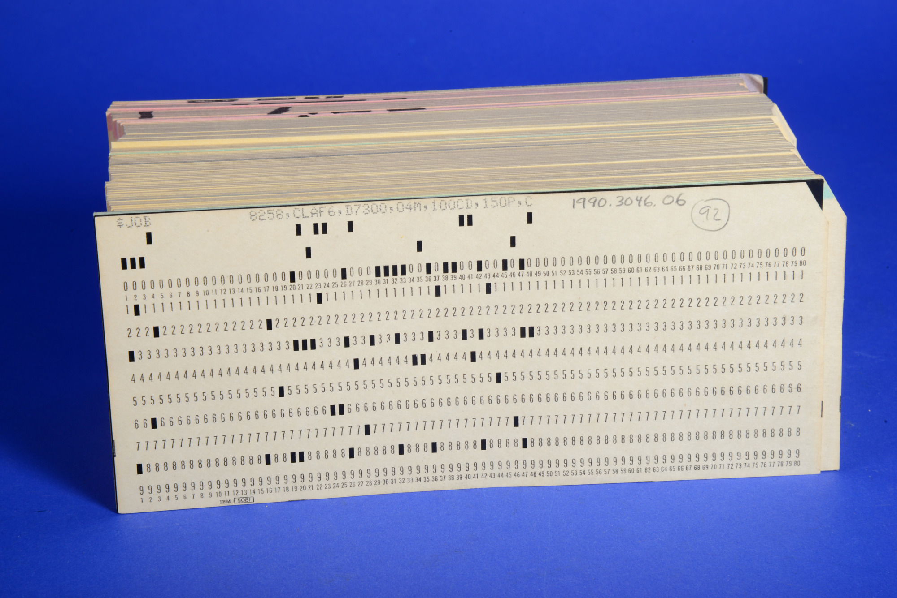

De geschiedenis van programmeertaal?
pagina 4
De ponskaart
De voorloper van programmeertaal was de ponskaart. Een papieren of kartonnen strook met vierkante gaatjes erin geprikt. Deze ponskaarten dienen als opslag van gegevens die door een aftast machines kunnen woorden gelezen. Herman Hollerith die alle informatie op ponskaarten codeerde, realiseerde zich dat de machinisten de passagiers konden identificeren aan de hand van het gat dat ze in het ticket hadden gemaakt. In 1890 maakte hij de ponskaart bruikbaar voor administratieve doeleinden.

Charles Babbage
De Britse filosoof en uitvinder Charles Babbage was al jaren bezig met het uitvinden en maken van een mechanische rekenmachine. In 1821 waren de plannen om deze rekenmachine te bouwen klaar een de naam: Difference engine no. 1 gegeven. De rekenmachine zou automatisch tabellen kunnen maken zonder dat er fouten in voor konden komen. Door reden die onbekend zijn is de rekenmachine nooit afgekomen. In 1834 begon Babbage aan een nieuw project te werken: The analytical engine. Een machine die nog beter zou kunnen werken de de voorheen bedachte mechanische rekenmachine. De machine zou op alleen maar stoom berekeningen kunnen maken en de uitkomsten daarvan kunnen onthouden. Het zou volledig mechanisch werken met tandwielen en assen en door stoom worden aangedreven. Ook deze machine werd nooit afgemaakt. Rond deze tijd raakte heeft Ada lovelace ook een artikel over deze machine vertaald maar ook heeft ze er een stuk bij geschreven: de eerste machine-algoritme, de basis voor alle programmeertalen.
De eerste programmeertaal
Ergens tussen 1944-45 ontwikkelde Konrad Zuse de eerste programmeertaal die in gebruik kon worden genomen genaamd Plankalkul ook wel genoemd de Zeus-taal. Deze taal maakte het mogelijk om procedures te maken waarin codefragmenten werden opgeslagen die steeds opnieuw konden worden opgeroepen om routinematige bewerkingen uit te voeren.
De eerste taal op hoog niveau
Shortcode (of afgekorte code) was de eerste taal op die op hoog niveau werkte. Dit werd in 1949 door John McCauley voorgesteld. Toch was het niet John McCauley maar William Schmitt die het heeft geimplementeerd voor de BINAC-computer en in 1950 voor UNIVAC.
Jaren 50
Een ander moment dat belangrijk was voor de ontwikkeling van programmeertalen was aan het einde van de jaren 50, toen er een rapport is gemaakt door de Amerikaanse en Europese commissie van computerexperts. Dit rapport bracht veel ideeen en leverde meerdere innovaties voor de ontwikkeling van computertaal.
SQL
SQL is ontwikkeld door IBM-onderzoekers Raymond Boyes en Donald Chamberlain. Het werd eerst SEQUEL genoemd en ging later over naar SQL dit staat voor Structured Query Language. SQL wordt gebruikt om informatie die is opgeslagen in databases te bekijken en te wijzigen. Er zijn veel bedrijven die gebruikmaken van SQL en enkele daarvan zijn Microsoft en Accenture.
ADA
In 1981 is Ada ontwikkelt. Ada is vernoemd naar Ada lovelace de wiskundige die de eerste broncode gecreeerd heeft in 1843. Ada is ontwikkeld door een team onder leiding van Gene Ichbia die dit deed onder contract van het Amerikaanse ministerie van defensie. Ada is een gestructureerde programmeertaal op hoog niveau met een groot aantal aan mogelijkheden. Ada wordt gebruikt in luchtverkeersleidingssystemen in landen als bijvoorbeeld Australie, Belgie en Duitsland, maar ook in vele andere transport- en ruimtevaartprojecten is Ada in gebruik.
Visual Basic
In 1991 heeft Microsoft Visual Basic ontwikkeld, het bijzondere aan deze taal is dat het programmeurs in staat stelt om al geschreven codefragmenten door middel van slepen neer te zetten. Deze taal wordt nu nog zelden gebruikt, echter heeft Microsoft Visual Basic wel gebruikt voor een aantal van zijn apps zoals Word, Excell en Access.
Java
Java bedacht in 1995 is een universele taal op hoog niveau die door James Gosling is bedacht met als doel om een interactief televisieproject te ondersteunen. Java heeft platformonafhankelijke functionaliteit en het behoort niet te min tot de meest gebruikten programmeertalen ter wereld. Java is in erg veel apparaten van computers tot smartphones tot zelfs parkeermeters.
Javascript
Ook JavaScript is gemaakt in 1995 en is ontwikkeld door Brendan Eich, het wordt het meest gebruikt voor dynamische webontwikkeling, PDF-documenten, webbrowsers en desktopwidgets. Bijna elke grote website gebruikt JavaScript. Gmail, Adobe Photoshop en Mozilla Firefox zijn verschillende bekende voorbeelden.
conclusie
In conclusie de geschiedenis van programmeertalen is fascinerend. Wie had kunnen bedenken dat een algoritme uit het midden van de 19e eeuw de wereld van vandaag zo veranderd kon hebben en de basis zou zijn voor de technologische samenleving waarin we de dag vandaag leven. Programmeertalen zijn flink veranderd in de afgelopen 150 jaar en zullen dit verschijnlijk nog wel even blijven doen. We zullen moeten zijn wat er nog gaat veranderen en ik verwacht dat het traject dat programmeertaal nog moet afleggen zeer interessant wordt.